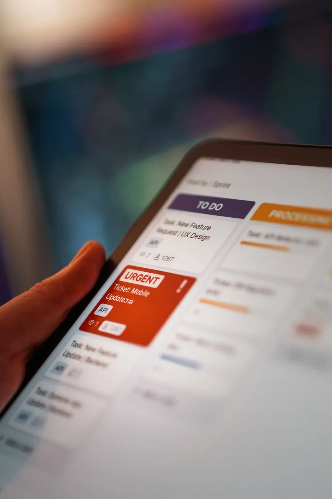
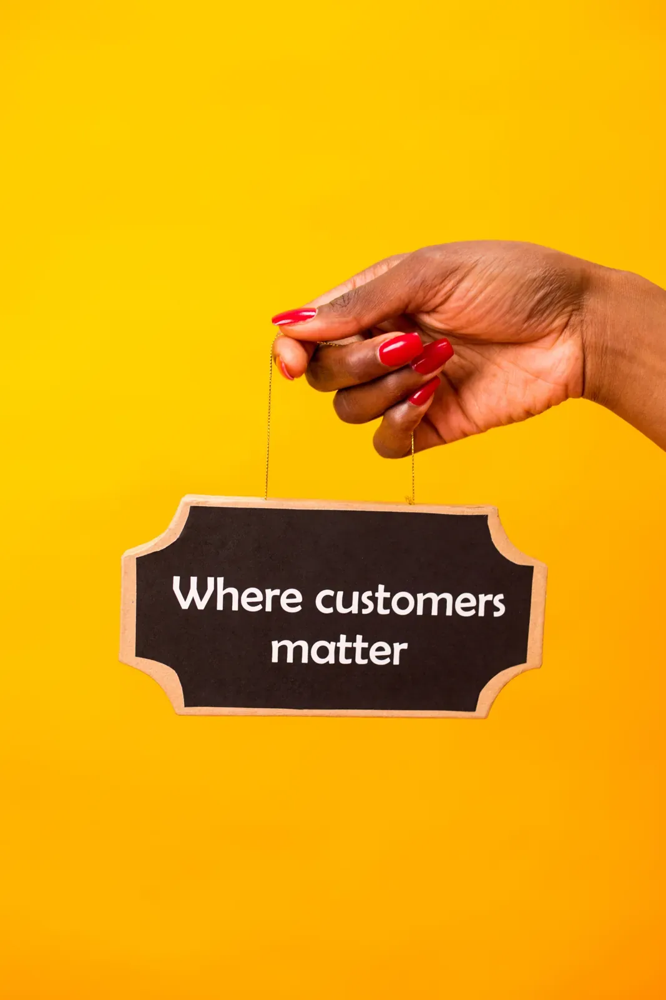

Pipeline breakdowns, outreach fixes and retention guidance written by the success managers who actually run this stuff with clients every week.


Adding leads every week isn't a strategy — it's how you end up with a messy pipeline. Here's what actually drives a deal forward, block over block.
Read the articleNine times out of ten it isn't your reps — it's your sequence setup. A success manager's breakdown of the usual suspects and the fixes that work.
Read the articleSkipping your health-score review doesn't make you leaner. It makes your next renewal riskier. Here's how we actually schedule them.
Read the articleMost quota plans fall apart on a busy Tuesday. Here's the version our revenue-optimization clients actually stick to for a year.
Read the articleA look inside the same block-building process every Stackly success manager uses, from prospecting phase to close week.
Read the articleYour CRM isn't the problem. Your stage discipline is. A simple fix that adds pipeline accuracy without touching your headcount.
Read the articleWe pulled the numbers from 200 client check-ins. Scheduled health-score reviews predicted renewal rates better than anything else we track.
Read the articleTimestamp, contact and a clear next step, every touch, not a judgment call. Here's how we grade it and why it matters.
Read the articleUnder-prospecting is the most common reason a growth block stalls out. Signs you're leaving pipeline on the table.
Read the articleEverything here is written for anyone. A managed client gets the same reasoning applied to their exact numbers, their exact deals, their exact week — not a general audience.
The most bookmarked post on the blog — why adding leads blindly isn't a strategy.
Our most-shared sales ops post — the sequencing mistake behind most missed quotas.
Data from 200 client check-ins — the retention post that changes routines.
The forecasting post we send to every client stuck on a growth plateau.
Our authors work live accounts every week, so the advice on this blog comes from the deals, calls and dashboards they manage.
Writes about capacity planning, territory design and cost per acquisition.
Writes about rep enablement, sequence design and deal velocity.
Writes about data hygiene, retention and compliance.
Writes about onboarding flow, activity logging and adoption tracking.
We publish one or two posts a week. Each one is reviewed by a success manager who has handled the situation it describes.
Yes. Send your question through the contact page or reply to the weekly newsletter. Topics that come up across several clients usually become a post.
Blog posts are general. If you are a managed client, your success manager applies the same ideas to your own stages, volumes and quotas.
You can share links freely. If you want to republish a post in your own newsletter or intranet, contact us first and we will confirm the details.